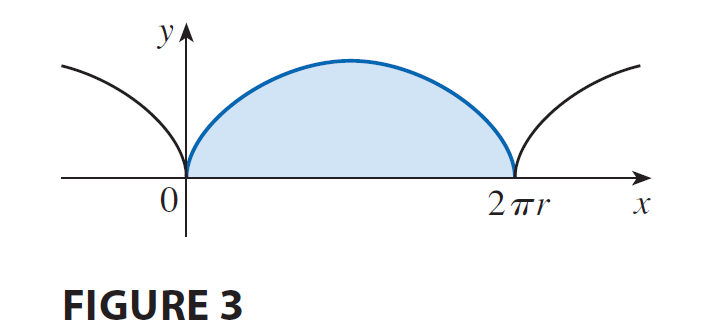

<!DOCTYPE html>
<html lang="zh-TW">
<head>
    <meta charset="UTF-8">
    <meta name="viewport" content="width=device-width, initial-scale=1.0">
    <title>微積分 (2) - 10.2 參數方程式的微積分 | Prof. Wu Wen-Chuan</title>
    
    <!-- 1. 核心樣式與庫載入 -->
    <!-- Tailwind CSS (樣式框架) -->
    <script src="https://cdn.tailwindcss.com"></script>
    
    <!-- React & ReactDOM (前端框架) -->
    <script crossorigin src="https://unpkg.com/react@18/umd/react.production.min.js"></script>
    <script crossorigin src="https://unpkg.com/react-dom@18/umd/react-dom.production.min.js"></script>
    
    <!-- Babel (JSX 編譯器) -->
    <script src="https://unpkg.com/@babel/standalone/babel.min.js"></script>

    <!-- KaTeX (數學公式渲染) -->
    <link rel="stylesheet" href="https://cdn.jsdelivr.net/npm/katex@0.16.9/dist/katex.min.css">
    <script src="https://cdn.jsdelivr.net/npm/katex@0.16.9/dist/katex.min.js"></script>
    
    <!-- 自定義樣式 -->
    <style>
        /* 平滑滾動 */
        html { scroll-behavior: smooth; }
        /* 自定義滾動條 */
        ::-webkit-scrollbar { width: 8px; }
        ::-webkit-scrollbar-track { background: #fdf2f8; }
        ::-webkit-scrollbar-thumb { background: #fbcfe8; border-radius: 4px; }
        ::-webkit-scrollbar-thumb:hover { background: #f472b6; }
        /* 數學公式容器樣式 - 允許水平滾動 */
        .math-display { overflow-x: auto; overflow-y: hidden; }
    </style>
</head>
<body class="bg-yellow-50 font-sans text-gray-800 selection:bg-pink-200">
    <div id="root"></div>

    <script type="text/babel">
        const { useState, useEffect, useRef } = React;

        // ==========================================
        // 2. 工具組件 (Utilities)
        // ==========================================

        /**
         * LaTeX 渲染組件
         */
        const Latex = ({ children, block = false, fontSize = '0.9em' }) => {
            const spanRef = useRef(null);

            useEffect(() => {
                if (window.katex && spanRef.current) {
                    try {
                        const content = typeof children === 'string' ? children : '';
                        window.katex.render(content, spanRef.current, {
                            throwOnError: false,
                            displayMode: block,
                        });
                    } catch (e) {
                        console.warn("KaTeX render error", e);
                        if (spanRef.current) spanRef.current.innerText = String(children);
                    }
                }
            }, [children, block]);

            return <span ref={spanRef} style={{ margin: '0 4px', display: block ? 'block' : 'inline-block', fontSize: fontSize }} />;
        };

        // ==========================================
        // 3. UI 子組件 (Sub-components)
        // ==========================================

        const Navbar = ({ t, isMenuOpen, setIsMenuOpen, toggleLang }) => {
            return (
                <nav className="sticky top-0 z-50 w-full bg-white/90 px-6 py-4 shadow-md backdrop-blur-md transition-all">
                    <div className="flex items-center justify-between max-w-7xl mx-auto">
                        <div className="flex flex-col">
                            <h1 className="bg-gradient-to-r from-pink-500 to-purple-500 bg-clip-text text-2xl font-black tracking-tight text-transparent md:text-3xl">
                                {t.title}
                            </h1>
                            <span className="text-base font-medium text-gray-500 md:text-xl">
                                {t.teacher}
                            </span>
                        </div>

                        <div className="hidden items-center gap-6 md:flex">
                            {t.menu.map((item, i) => (
                                <a key={i} href={`#part${i+1}`} className="text-xl font-bold text-gray-600 hover:text-pink-500 transition-colors">{item}</a>
                            ))}
                            <button 
                                onClick={toggleLang}
                                className="flex items-center gap-2 rounded-full bg-purple-100 px-5 py-2 text-lg font-bold text-purple-700 transition-all hover:bg-purple-200 hover:shadow-md active:scale-95"
                            >
                                <svg xmlns="http://www.w3.org/2000/svg" width="20" height="20" viewBox="0 0 24 24" fill="none" stroke="currentColor" strokeWidth="2" strokeLinecap="round" strokeLinejoin="round"><circle cx="12" cy="12" r="10"/><line x1="2" x2="22" y1="12" y2="12"/><path d="M12 2a15.3 15.3 0 0 1 4 10 15.3 15.3 0 0 1-4 10 15.3 15.3 0 0 1-4-10 15.3 15.3 0 0 1 4-10z"/></svg>
                                {t.langBtn}
                            </button>
                        </div>

                        <button 
                            className="rounded-full bg-gray-100 p-2 text-gray-600 md:hidden hover:bg-gray-200"
                            onClick={() => setIsMenuOpen(!isMenuOpen)}
                        >
                            <svg xmlns="http://www.w3.org/2000/svg" width="24" height="24" viewBox="0 0 24 24" fill="none" stroke="currentColor" strokeWidth="2" strokeLinecap="round" strokeLinejoin="round"><line x1="4" x2="20" y1="12" y2="12"/><line x1="4" x2="20" y1="6" y2="6"/><line x1="4" x2="20" y1="18" y2="18"/></svg>
                        </button>
                    </div>

                    {isMenuOpen && (
                        <div className="mt-4 flex flex-col gap-4 border-t border-gray-100 pt-4 md:hidden">
                            {t.menu.map((item, i) => (
                                <a key={i} href={`#part${i+1}`} onClick={() => setIsMenuOpen(false)} className="px-2 py-1 text-lg font-bold text-gray-600">{item}</a>
                            ))}
                            <button 
                                onClick={() => { toggleLang(); setIsMenuOpen(false); }}
                                className="flex w-full items-center justify-center gap-2 rounded-xl bg-purple-100 py-3 font-bold text-purple-700"
                            >
                                <svg xmlns="http://www.w3.org/2000/svg" width="20" height="20" viewBox="0 0 24 24" fill="none" stroke="currentColor" strokeWidth="2" strokeLinecap="round" strokeLinejoin="round"><circle cx="12" cy="12" r="10"/><line x1="2" x2="22" y1="12" y2="12"/><path d="M12 2a15.3 15.3 0 0 1 4 10 15.3 15.3 0 0 1-4 10 15.3 15.3 0 0 1-4-10 15.3 15.3 0 0 1 4-10z"/></svg>
                                {t.langBtn}
                            </button>
                        </div>
                    )}
                </nav>
            );
        };

        const UnitHeader = ({ t }) => (
            <div className="mb-8 text-center animate-in fade-in zoom-in duration-500">
                <h2 className="mb-2 text-4xl font-black text-black md:text-5xl">
                    <span className="mr-3 text-black">{t.unitId}</span>
                    {t.unitTitle}
                </h2>
                <p className="text-2xl font-bold text-gray-500">{t.unitSub}</p>
            </div>
        );

        const Part1 = ({ t }) => (
            <section id="part1" className="scroll-mt-32 rounded-[2rem] bg-pink-100 p-8 shadow-lg shadow-pink-100/50 md:p-12 transition-all hover:shadow-xl">
                <div className="mb-6 flex items-center gap-3">
                    <div className="flex h-12 w-12 items-center justify-center rounded-full bg-white text-pink-500 shadow-sm">
                        <svg xmlns="http://www.w3.org/2000/svg" width="28" height="28" viewBox="0 0 24 24" fill="none" stroke="currentColor" strokeWidth="2" strokeLinecap="round" strokeLinejoin="round"><path d="M2 3h6a4 4 0 0 1 4 4v14a3 3 0 0 0-3-3H2z"/><path d="M22 3h-6a4 4 0 0 0-4 4v14a3 3 0 0 1 3-3h7z"/></svg>
                    </div>
                    <h2 className="text-2xl font-black text-pink-700 md:text-3xl">{t.part1Title}</h2>
                </div>
                
                <div className="space-y-8 rounded-3xl bg-white/60 p-6 md:p-8">
                    <h3 className="text-2xl font-bold text-gray-800">{t.part1Topic}</h3>
                    <div className="text-xl leading-relaxed text-gray-700">{t.part1Desc}</div>

                    {/* 觀念類比區塊 */}
                    <div className="bg-purple-50 py-4 px-6 rounded-2xl border-l-8 border-purple-400">
                        <h4 className="font-bold text-purple-800 text-xl mb-2 flex items-center gap-2">
                            <span>💡</span> {t.analogyTitle}
                        </h4>
                        <div className="text-xl text-gray-700 leading-relaxed">
                            {t.analogyDesc}
                        </div>
                    </div>
                    
                    {/* 微分區塊 */}
                    <div className="bg-pink-50 py-4 px-6 rounded-2xl border-l-8 border-pink-400">
                        <h4 className="font-bold text-pink-800 text-xl mb-2">{t.part1Step1}</h4>
                        <div className="grid md:grid-cols-2 gap-4 text-center">
                            <div className="bg-white p-3 rounded-xl shadow-sm">
                                <p className="mb-2 text-lg font-bold text-gray-600">切線斜率 (Tangent)</p>
                                <Latex block>{'\\displaystyle \\frac{dy}{dx} = \\frac{dy/dt}{dx/dt}'}</Latex>
                            </div>
                            <div className="bg-white p-3 rounded-xl shadow-sm">
                                <p className="mb-2 text-lg font-bold text-gray-600">二階導數 (Concavity)</p>
                                <Latex block>{'\\displaystyle \\frac{d^2y}{dx^2} = \\frac{\\frac{d}{dt}(\\frac{dy}{dx})}{dx/dt}'}</Latex>
                            </div>
                        </div>
                    </div>

                    {/* 積分區塊 */}
                    <div className="bg-white p-6 rounded-2xl border-l-8 border-pink-400 shadow-sm">
                        <h4 className="font-bold text-pink-800 text-xl mb-4">{t.part1Step2}</h4>
                        <ul className="space-y-6 text-lg text-gray-700">
                            <li>
                                <span className="font-bold block mb-1">面積 (Area):</span> 
                                <Latex block>{'\\displaystyle A = \\int y \\, dx = \\int_{\\alpha}^{\\beta} g(t) f\'(t) \\, dt'}</Latex>
                            </li>
                            <li>
                                <span className="font-bold block mb-1">弧長 (Arc Length):</span> 
                                <Latex block>{'\\displaystyle L = \\int_{\\alpha}^{\\beta} \\sqrt{\\left(\\frac{dx}{dt}\\right)^2 + \\left(\\frac{dy}{dt}\\right)^2} \\, dt'}</Latex>
                            </li>
                            <li>
                                <span className="font-bold block mb-1">旋轉表面積 (Surface Area):</span> 
                                <Latex block>{'\\displaystyle S = \\int 2\\pi y \\sqrt{\\left(\\frac{dx}{dt}\\right)^2 + \\left(\\frac{dy}{dt}\\right)^2} \\, dt'}</Latex>
                            </li>
                        </ul>
                    </div>
                </div>
            </section>
        );

        const Part2 = ({ t, activeExList, activeExampleId, setActiveExampleId }) => {
            const activeEx = activeExList.find(e => e.id === activeExampleId) || activeExList[0];
            return (
                <section id="part2" className="scroll-mt-32 rounded-[2rem] bg-blue-100 p-8 shadow-lg shadow-blue-100/50 md:p-12 transition-all hover:shadow-xl">
                    <div className="mb-6 flex items-center gap-3">
                        <div className="flex h-12 w-12 items-center justify-center rounded-full bg-white text-blue-500 shadow-sm">
                            <svg xmlns="http://www.w3.org/2000/svg" width="28" height="28" viewBox="0 0 24 24" fill="none" stroke="currentColor" strokeWidth="2" strokeLinecap="round" strokeLinejoin="round"><rect width="16" height="20" x="4" y="2" rx="2"/><line x1="8" x2="16" y1="6" y2="6"/><line x1="16" x2="16" y1="14" y2="18"/><path d="M16 10h.01"/><path d="M12 10h.01"/><path d="M8 10h.01"/><path d="M12 14h.01"/><path d="M8 14h.01"/><path d="M12 18h.01"/><path d="M8 18h.01"/></svg>
                        </div>
                        <h2 className="text-2xl font-black text-blue-700 md:text-3xl">{t.part2Title}</h2>
                    </div>

                    <div className="mb-8 flex flex-wrap gap-3">
                        {activeExList.map((ex) => (
                            <button
                                key={ex.id}
                                onClick={() => setActiveExampleId(ex.id)}
                                className={`rounded-full px-6 py-3 text-lg font-bold transition-all shadow-sm ${
                                    activeExampleId === ex.id
                                        ? "bg-blue-600 text-white shadow-lg shadow-blue-500/30 scale-105"
                                        : "bg-white text-blue-600 hover:bg-blue-50 hover:scale-105"
                                }`}
                            >
                                {t.btnLabel} {ex.id}
                            </button>
                        ))}
                    </div>

                    <div className="space-y-8">
                        <div key={activeEx.id} className="rounded-3xl bg-white/60 p-6 md:p-8 shadow-inner">
                            <div className="border-b-2 border-blue-200 pb-6 mb-6">
                                <h3 className="text-2xl font-bold text-blue-800 mb-3">{activeEx.title}</h3>
                                <div className="flex flex-wrap items-center gap-4 text-lg font-bold text-gray-800">
                                    <span className="bg-blue-100 text-blue-800 px-3 py-1 rounded-lg">{t.btnLabel} {activeEx.id}:</span>
                                    <div className="rounded-xl bg-white px-6 py-3 text-blue-600 shadow-md ring-1 ring-blue-100 math-display">
                                        <Latex block fontSize="0.9em">{activeEx.math}</Latex>
                                    </div>
                                </div>
                            </div>

                            <div className="space-y-6">
                                {activeEx.steps.map((step, idx) => (
                                    <div key={idx} className="group rounded-2xl bg-white p-6 ring-2 ring-blue-200 transition-all hover:shadow-lg hover:ring-blue-400">
                                        <h4 className="mb-3 flex items-center gap-3 text-lg font-bold text-blue-700">
                                            <span className="flex h-8 w-8 items-center justify-center rounded-full bg-blue-600 text-sm text-white font-black">
                                                {idx + 1}
                                            </span>
                                            {step.t}
                                        </h4>
                                        <div className="mb-4 text-lg text-gray-600 pl-11">{step.d}</div>
                                        <div className="bg-blue-50 p-4 text-center text-lg font-bold text-blue-900 rounded-xl math-display border border-blue-100">
                                            <Latex block fontSize="0.9em">{step.m}</Latex>
                                        </div>
                                    </div>
                                ))}
                            </div>
                        </div>
                    </div>
                </section>
            );
        };

        const Part3 = ({ t, activePracList, activePracticeId, setActivePracticeId }) => {
            const activePrac = activePracList.find(p => p.id === activePracticeId) || activePracList[0];
            return (
                <section id="part3" className="scroll-mt-32 rounded-[2rem] bg-green-100 p-8 shadow-lg shadow-green-100/50 md:p-12 transition-all hover:shadow-xl">
                    <div className="flex items-center gap-3 mb-6">
                        <div className="flex h-12 w-12 items-center justify-center rounded-full bg-white text-green-500 shadow-sm">
                            <svg xmlns="http://www.w3.org/2000/svg" width="28" height="28" viewBox="0 0 24 24" fill="none" stroke="currentColor" strokeWidth="2" strokeLinecap="round" strokeLinejoin="round"><path d="m12 19 7-7 3 3-7 7-3-3z"/><path d="m18 13-1.5-7.5L2 2l3.5 14.5L13 18l5-5z"/><path d="m2 2 7.586 7.586"/><circle cx="11" cy="11" r="2"/></svg>
                        </div>
                        <h2 className="text-2xl font-black text-green-700 md:text-3xl">{t.part3Title}</h2>
                    </div>

                    <div className="mb-8 flex flex-wrap gap-3">
                        {activePracList.map((p) => (
                            <button
                                key={p.id}
                                onClick={() => setActivePracticeId(p.id)}
                                className={`rounded-full px-6 py-3 text-lg font-bold transition-all shadow-sm ${
                                    activePracticeId === p.id
                                        ? "bg-green-600 text-white shadow-lg shadow-green-500/30 scale-105"
                                        : "bg-white text-green-600 hover:bg-green-50 hover:scale-105"
                                }`}
                            >
                                {t.btnPracticeLabel} {p.id}
                            </button>
                        ))}
                    </div>

                    <div className="mt-4 rounded-3xl bg-white/60 p-6 md:p-8">
                        <p className="mb-8 text-xl text-gray-700 font-medium">{t.part3Desc}</p>
                        
                        <div key={activePrac.id} className="rounded-3xl bg-white p-6 md:p-8 shadow-md border-2 border-green-300 animate-in fade-in slide-in-from-bottom-4 duration-300">
                            <div className="border-b-2 border-green-100 pb-6 mb-6">
                                <h3 className="text-2xl font-bold text-green-800 mb-3">{activePrac.title}</h3>
                                <div className="flex flex-wrap items-center gap-4 text-lg font-bold text-gray-800">
                                    <span className="bg-green-100 text-green-800 px-3 py-1 rounded-lg">{t.btnPracticeLabel} {activePrac.id}:</span>
                                    <div className="rounded-xl bg-white px-6 py-3 text-green-700 shadow-md ring-1 ring-green-100 math-display">
                                        <Latex block fontSize="0.9em">{activePrac.math}</Latex>
                                    </div>
                                </div>
                            </div>

                            <div className="mt-6 space-y-6">
                                {activePrac.steps.map((step, idx) => (
                                    <div key={idx} className="group rounded-2xl bg-white p-6 ring-2 ring-green-200 transition-all hover:shadow-lg hover:ring-green-400">
                                        <h4 className="mb-3 flex items-center gap-3 text-lg font-bold text-green-600">
                                            <span className="flex h-8 w-8 items-center justify-center rounded-full bg-green-600 text-sm text-white font-black">
                                                {idx + 1}
                                            </span>
                                            {step.t}
                                        </h4>
                                        <div className="mb-4 text-lg text-gray-600 pl-11">{step.d}</div>
                                        <div className="bg-green-50 p-4 text-center text-lg font-bold text-green-800 rounded-xl math-display border border-green-100">
                                            <Latex block fontSize="0.9em">{step.m}</Latex>
                                        </div>
                                    </div>
                                ))}
                            </div>
                        </div>
                    </div>
                </section>
            );
        };

        const App = () => {
            const [lang, setLang] = useState('zh');
            const [katexLoaded, setKatexLoaded] = useState(false);
            const [isMenuOpen, setIsMenuOpen] = useState(false);
            const [activeExampleId, setActiveExampleId] = useState(1);
            const [activePracticeId, setActivePracticeId] = useState(1);

            useEffect(() => {
                const checkKatex = setInterval(() => {
                    if (window.katex) {
                        setKatexLoaded(true);
                        clearInterval(checkKatex);
                    }
                }, 100);
                setTimeout(() => setKatexLoaded(true), 3000); 
                return () => clearInterval(checkKatex);
            }, []);

            const toggleLang = () => {
                setLang(prev => prev === 'zh' ? 'en' : 'zh');
                setIsMenuOpen(false);
            };

            const t = DATA[lang];
            const activeExList = EXAMPLES_DATA[lang];
            const activePracList = PRACTICE_DATA[lang];

            if (!katexLoaded) {
                return (
                    <div className="flex h-screen w-full items-center justify-center bg-yellow-50 text-xl font-bold text-gray-500">
                        Loading Math Engine...
                    </div>
                );
            }

            return (
                <div className="min-h-screen bg-yellow-50 font-sans text-gray-800 selection:bg-pink-200">
                    <Navbar t={t} isMenuOpen={isMenuOpen} setIsMenuOpen={setIsMenuOpen} toggleLang={toggleLang} />
                    <main className="mx-auto mt-16 flex max-w-6xl flex-col gap-16 px-4 pb-20">
                        <UnitHeader t={t} />
                        <Part1 t={t} />
                        <Part2 t={t} activeExList={activeExList} activeExampleId={activeExampleId} setActiveExampleId={setActiveExampleId} />
                        <Part3 t={t} activePracList={activePracList} activePracticeId={activePracticeId} setActivePracticeId={setActivePracticeId} />
                    </main>
                    <footer className="mt-12 bg-white py-12 text-center text-gray-400 border-t border-gray-100">
                        <p className="text-lg">© 2025 Calculus (2) Course. Prof. Wu Wen-Chuan.</p>
                        <p className="mt-2 text-sm">Designed for Student Success</p>
                    </footer>
                </div>
            );
        };

        // ==========================================
        // 4. 資料定義 (Data)
        // ==========================================

        const DATA = {
            zh: {
                title: "微積分 (2)",
                teacher: "授課老師: 吳文銓 (Prof. Wu Wen-Chuan)",
                menu: ["核心概念", "範例說明", "動手練習"],
                langBtn: "English",
                unitId: "10.2",
                unitTitle: "參數方程式的微積分",
                unitSub: "Calculus with Parametric Equations",
                part1Title: "第一部分：核心概念",
                part1Topic: "參數曲線的微分與積分",
                part1Desc: (
                    <span>
                        我們將微積分的核心運算（微分、積分）擴展到參數曲線。這讓我們能處理更複雜的幾何圖形與動態路徑。
                    </span>
                ),
                analogyTitle: "觀念類比：無人機飛行紀錄",
                analogyDesc: (
                    <span>
                        「參數微積分」就像是分析無人機的飛行數據。我們知道每一秒鐘（參數 <Latex>{'t'}</Latex>）的高度（<Latex>{'y'}</Latex>）與水平位置（<Latex>{'x'}</Latex>）。<br/><br/>
                        <b>微分 (Tangent)：</b> 比較垂直上升速度與水平推進速度的比例，即可知道當下的飛行角度。<br/>
                        <b>積分 (Arc Length)：</b> 加總每一微秒飛行的微小距離，即可算出總航程。
                    </span>
                ),
                part1Step1: "微分 (Differentiation)",
                part1Step1Desc: (
                    <span>
                        切線斜率與二階導數的計算公式：
                    </span>
                ),
                part1Step2: "積分 (Integration)",
                part1Step2Desc: (
                    <span>
                        面積、弧長與旋轉曲面面積的計算公式：
                    </span>
                ),
                part2Title: "第二部分：範例說明",
                part3Title: "第三部分：動手練習",
                part3Desc: "請嘗試解決以下題目，並參考詳細步驟核對：",
                btnLabel: "例題",
                btnPracticeLabel: "練習題"
            },
            en: {
                title: "Calculus (2)",
                teacher: "Instructor: Prof. Wu Wen-Chuan",
                menu: ["Concepts", "Examples", "Practice"],
                langBtn: "繁體中文",
                unitId: "10.2",
                unitTitle: "Calculus with Parametric Equations",
                unitSub: "Calculus with Parametric Equations",
                part1Title: "Part 1: Core Concepts",
                part1Topic: "Differentiation and Integration",
                part1Desc: (
                    <span>
                        We extend calculus operations to parametric curves, allowing us to handle complex geometries and dynamic paths.
                    </span>
                ),
                analogyTitle: "Analogy: Drone Flight Data",
                analogyDesc: (
                    <span>
                        Parametric calculus is like analyzing drone flight data. We know altitude (<Latex>{'y'}</Latex>) and horizontal position (<Latex>{'x'}</Latex>) at every second (<Latex>{'t'}</Latex>).<br/><br/>
                        <b>Differentiation:</b> Compare vertical speed to horizontal speed to find the flight angle.<br/>
                        <b>Integration:</b> Sum up tiny distances traveled to find the total flight path length.
                    </span>
                ),
                part1Step1: "Differentiation",
                part1Step1Desc: (
                    <span>
                        Formulas for tangent slope and second derivative:
                    </span>
                ),
                part1Step2: "Integration",
                part1Step2Desc: (
                    <span>
                        Formulas for Area, Arc Length, and Surface Area:
                    </span>
                ),
                part2Title: "Part 2: Examples",
                part3Title: "Part 3: Practice",
                part3Desc: "Solve the problems and check the detailed steps below:",
                btnLabel: "Ex",
                btnPracticeLabel: "Q"
            }
        };

        const EXAMPLES_DATA = {
            zh: [
                {
                    id: 1, label: "Ex 1", title: "切線與凹凸性 (P.674)",
                    math: "\\displaystyle x = t^2, \\quad y = t^3 - 3t",
                    steps: [
                        { t: "Step 1: 求一階導數 (First Derivative)", d: (<span>利用連鎖律 <Latex>{'\\frac{dy}{dx} = \\frac{dy/dt}{dx/dt}'}</Latex>。</span>), m: "\\displaystyle \\frac{dy}{dt} = 3t^2 - 3, \\quad \\frac{dx}{dt} = 2t \\implies \\frac{dy}{dx} = \\frac{3t^2-3}{2t}" },
                        { t: "Step 2: 分析特定點 (Analyze Point)", d: (<span>在 <Latex>{'(3,0)'}</Latex> 處，<Latex>{'x=3 \\implies t^2=3 \\implies t=\\pm\\sqrt{3}'}</Latex>。</span>), m: "\\displaystyle t=\\sqrt{3} \\implies m = \\frac{3(3)-3}{2\\sqrt{3}} = \\sqrt{3}; \\quad t=-\\sqrt{3} \\implies m = -\\sqrt{3}" },
                        { t: "Step 3: 水平與垂直切線 (Tangents)", d: (<span>水平：<Latex>{'dy/dt=0 \\implies t=\\pm 1'}</Latex>。垂直：<Latex>{'dx/dt=0 \\implies t=0'}</Latex>。</span>), m: "\\displaystyle \\text{Horiz: } (1, -2), (1, 2); \\quad \\text{Vert: } (0, 0)" },
                        { t: "Step 4: 求二階導數 (Second Derivative)", d: (<span>注意公式：<Latex>{'\\frac{d}{dt}(\\frac{dy}{dx}) / \\frac{dx}{dt}'}</Latex>。</span>), m: "\\displaystyle \\frac{d}{dt}\\left(\\frac{3t^2-3}{2t}\\right) = \\frac{d}{dt}\\left(\\frac{3}{2}t - \\frac{3}{2}t^{-1}\\right) = \\frac{3}{2} + \\frac{3}{2}t^{-2} = \\frac{3(t^2+1)}{2t^2}" },
                        { t: "Step 5: 除以 dx/dt (Divide by dx/dt)", d: (<span>這是最常被遺忘的步驟！</span>), m: "\\displaystyle \\frac{d^2y}{dx^2} = \\frac{\\frac{3(t^2+1)}{2t^2}}{2t} = \\frac{3(t^2+1)}{4t^3}" },
                        { t: "Step 6: 凹凸性判斷 (Concavity)", d: (<span>當 <Latex>{'t>0'}</Latex> 二階導為正（凹向上）；<Latex>{'t<0'}</Latex> 為負（凹向下）。 <br/>  </span>), m: "\\displaystyle t > 0 \\implies \\text{Concave Up}; \\quad t < 0 \\implies \\text{Concave Down}" }
                    ]
                },
                {
                    id: 3, label: "Ex 3", title: "擺線下的面積 (P.675)",
                    math: "\\displaystyle x = r(\\theta - \\sin \\theta), \\quad y = r(1 - \\cos \\theta), \\quad 0 \\le \\theta \\le 2\\pi",
                    steps: [
                        { t: "Step 1: 面積公式 (Area Formula)", d: (<span>使用代換積分法 <Latex>{'A = \\int y dx = \\int y(t) x\'(t) dt'}</Latex>。</span>), m: "\\displaystyle dx = r(1 - \\cos \\theta) d\\theta" },
                        { t: "Step 2: 建立積分式 (Setup Integral)", d: (<span>代入 <Latex>{'y'}</Latex> 與 <Latex>{'dx'}</Latex>。</span>), m: "\\displaystyle A = \\int_{0}^{2\\pi} r(1 - \\cos \\theta) \\cdot r(1 - \\cos \\theta) d\\theta = r^2 \\int_{0}^{2\\pi} (1 - \\cos \\theta)^2 d\\theta" },
                        { t: "Step 3: 展開平方式 (Expand)", d: (<span>展開 <Latex>{'(1-\\cos\\theta)^2'}</Latex>。</span>), m: "\\displaystyle A = r^2 \\int_{0}^{2\\pi} (1 - 2\\cos \\theta + \\cos^2 \\theta) d\\theta" },
                        { t: "Step 4: 半角公式 (Half-Angle Identity)", d: (<span>將 <Latex>{'\\cos^2\\theta'}</Latex> 降次為 <Latex>{'\\frac{1}{2}(1+\\cos 2\\theta)'}</Latex>。</span>), m: "\\displaystyle A = r^2 \\int_{0}^{2\\pi} (1 - 2\\cos \\theta + \\frac{1}{2} + \\frac{1}{2}\\cos 2\\theta) d\\theta" },
                        { t: "Step 5: 逐項積分 (Integrate)", d: (<span><Latex>{'1+1/2 = 3/2'}</Latex>。積分 <Latex>{'\\cos'}</Latex> 得 <Latex>{'\\sin'}</Latex>。</span>), m: "\\displaystyle r^2 \\left[ \\frac{3}{2}\\theta - 2\\sin\\theta + \\frac{1}{4}\\sin 2\\theta \\right]_0^{2\\pi}" },
                        { t: "Step 6: 計算結果 (Result)", d: (<span>代入 <Latex>{'2\\pi'}</Latex> 與 0。正弦項皆為 0。 <br/>  </span>), m: "\\displaystyle r^2 (\\frac{3}{2}(2\\pi) - 0) = 3\\pi r^2" }
                    ]
                },
                {
                    id: 5, label: "Ex 5", title: "擺線的弧長 (P.678)",
                    math: "\\displaystyle x = r(\\theta - \\sin \\theta), \\quad y = r(1 - \\cos \\theta), \\quad 0 \\le \\theta \\le 2\\pi",
                    steps: [
                        { t: "Step 1: 計算導數 (Derivatives)", d: (<span>求 <Latex>{'dx/d\\theta'}</Latex> 與 <Latex>{'dy/d\\theta'}</Latex>。</span>), m: "\\displaystyle \\frac{dx}{d\\theta} = r(1-\\cos\\theta), \\quad \\frac{dy}{d\\theta} = r\\sin\\theta" },
                        { t: "Step 2: 導數平方和 (Sum of Squares)", d: (<span>展開並化簡 <Latex>{'(dx/d\\theta)^2 + (dy/d\\theta)^2'}</Latex>。</span>), m: "\\displaystyle r^2(1 - 2\\cos\\theta + \\cos^2\\theta) + r^2\\sin^2\\theta = r^2(2 - 2\\cos\\theta)" },
                        { t: "Step 3: 半角公式 (Half-Angle Identity)", d: (<span>利用 <Latex>{'1-\\cos\\theta = 2\\sin^2(\\theta/2)'}</Latex>。</span>), m: "\\displaystyle 2r^2(2\\sin^2(\\theta/2)) = 4r^2\\sin^2(\\theta/2)" },
                        { t: "Step 4: 開根號 (Take Square Root)", d: (<span>在 <Latex>{'0 \\le \\theta \\le 2\\pi'}</Latex> 區間，<Latex>{'\\sin(\\theta/2) \\ge 0'}</Latex>。</span>), m: "\\displaystyle \\sqrt{4r^2\\sin^2(\\theta/2)} = 2r\\sin(\\theta/2)" },
                        { t: "Step 5: 積分 (Integrate)", d: (<span>積分 <Latex>{'\\sin(u)'}</Latex> 得 <Latex>{'-\\cos(u)'}</Latex>。注意係數。</span>), m: "\\displaystyle L = \\int_{0}^{2\\pi} 2r\\sin(\\theta/2) d\\theta = 2r [-2\\cos(\\theta/2)]_0^{2\\pi}" },
                        { t: "Step 6: 計算結果 (Result)", d: (<span>代入邊界。 <br/>  </span>), m: "\\displaystyle -4r(\\cos\\pi - \\cos 0) = -4r(-1 - 1) = 8r" }
                    ]
                },
                {
                    id: 7, label: "Ex 7", title: "球體表面積 (P.679)",
                    math: "\\displaystyle x = r \\cos t, \\quad y = r \\sin t, \\quad 0 \\le t \\le \\pi",
                    steps: [
                        { t: "Step 1: 參數化 (Parametrize)", d: (<span>球體可視為半圓 <Latex>{'y=\\sqrt{r^2-x^2}'}</Latex> 繞 x 軸旋轉。</span>), m: "\\displaystyle x = r\\cos t, \\quad y = r\\sin t" },
                        { t: "Step 2: 計算導數 (Derivatives)", d: (<span>求 <Latex>{'dx/dt'}</Latex> 與 <Latex>{'dy/dt'}</Latex>。</span>), m: "\\displaystyle \\frac{dx}{dt} = -r\\sin t, \\quad \\frac{dy}{dt} = r\\cos t" },
                        { t: "Step 3: 計算 ds (Arc Length Element)", d: (<span>計算 <Latex>{'\\sqrt{(dx/dt)^2 + (dy/dt)^2}'}</Latex>。</span>), m: "\\displaystyle \\sqrt{r^2\\sin^2t + r^2\\cos^2t} = \\sqrt{r^2(1)} = r" },
                        { t: "Step 4: 表面積公式 (Surface Area Formula)", d: (<span>繞 x 軸旋轉：<Latex>{'S = \\int 2\\pi y ds'}</Latex>。</span>), m: "\\displaystyle S = \\int_{0}^{\\pi} 2\\pi (r\\sin t) \\cdot r \\, dt = 2\\pi r^2 \\int_{0}^{\\pi} \\sin t \\, dt" },
                        { t: "Step 5: 積分 (Integrate)", d: (<span>積分 <Latex>{'\\sin t'}</Latex>。</span>), m: "\\displaystyle 2\\pi r^2 [-\\cos t]_0^{\\pi}" },
                        { t: "Step 6: 計算結果 (Result)", d: (<span>代入邊界。</span>), m: "\\displaystyle 2\\pi r^2 (-(-1) - (-1)) = 2\\pi r^2 (2) = 4\\pi r^2" }
                    ]
                }
            ],
            en: [
                {
                    id: 1, label: "Ex 1", title: "Tangents & Concavity (P.674)",
                    math: "\\displaystyle x = t^2, \\quad y = t^3 - 3t",
                    steps: [
                        { t: "Step 1: First Derivative", d: (<span>Chain rule <Latex>{'dy/dx = (dy/dt)/(dx/dt)'}</Latex>.</span>), m: "\\displaystyle \\frac{dy}{dx} = \\frac{3t^2-3}{2t}" },
                        { t: "Step 2: Analyze Point (3,0)", d: (<span>Solve <Latex>{'t^2=3'}</Latex>. Find slopes at <Latex>{'t=\\pm\\sqrt{3}'}</Latex>.</span>), m: "\\displaystyle m = \\pm\\sqrt{3}" },
                        { t: "Step 3: Second Derivative", d: (<span>Differentiate <Latex>{'dy/dx'}</Latex> wrt t.</span>), m: "\\displaystyle \\frac{d}{dt}(\\frac{3t^2-3}{2t}) = \\frac{3(t^2+1)}{2t^2}" },
                        { t: "Step 4: Divide by dx/dt", d: (<span>Crucial step for concavity!</span>), m: "\\displaystyle \\frac{d^2y}{dx^2} = \\frac{3(t^2+1)/2t^2}{2t} = \\frac{3(t^2+1)}{4t^3}" },
                        { t: "Step 5: Determine Concavity", d: (<span>Check sign of second derivative. <br/>  </span>), m: "\\displaystyle t>0 \\to (+) \\text{ Up}; \\quad t<0 \\to (-) \\text{ Down}" }
                    ]
                },
                {
                    id: 3, label: "Ex 3", title: "Area of Cycloid (P.675)",
                    math: "\\displaystyle x = r(\\theta - \\sin \\theta), \\quad y = r(1 - \\cos \\theta)",
                    steps: [
                        { t: "Step 1: Area Formula", d: (<span><Latex>{'A = \\int y dx'}</Latex>. Calculate <Latex>{'dx/d\\theta'}</Latex>.</span>), m: "\\displaystyle dx = r(1-\\cos\\theta) d\\theta" },
                        { t: "Step 2: Setup Integral", d: (<span>Substitute y and dx.</span>), m: "\\displaystyle \\int_0^{2\\pi} r^2(1-\\cos\\theta)^2 d\\theta" },
                        { t: "Step 3: Expand & Simplify", d: (<span>Use <Latex>{'\\cos^2\\theta = (1+\\cos 2\\theta)/2'}</Latex>.</span>), m: "\\displaystyle r^2 \\int (1 - 2\\cos\\theta + \\frac{1}{2} + \\frac{1}{2}\\cos 2\\theta) d\\theta" },
                        { t: "Step 4: Result", d: (<span>Integrate and evaluate limits. <br/>  </span>), m: "\\displaystyle 3\\pi r^2" }
                    ]
                },
                {
                    id: 5, label: "Ex 5", title: "Arc Length of Cycloid (P.678)",
                    math: "\\displaystyle L = \\int_0^{2\\pi} \\sqrt{(dx/d\\theta)^2 + (dy/d\\theta)^2} d\\theta",
                    steps: [
                        { t: "Step 1: Derivatives Squares", d: (<span>Compute and add squares.</span>), m: "\\displaystyle r^2(1-\\cos\\theta)^2 + r^2\\sin^2\\theta = 2r^2(1-\\cos\\theta)" },
                        { t: "Step 2: Half Angle", d: (<span>Use <Latex>{'1-\\cos\\theta = 2\\sin^2(\\theta/2)'}</Latex>.</span>), m: "\\displaystyle \\sqrt{4r^2\\sin^2(\\theta/2)} = 2r\\sin(\\theta/2)" },
                        { t: "Step 3: Integrate", d: (<span>Integrate sine function.</span>), m: "\\displaystyle 2r [-2\\cos(\\theta/2)]_0^{2\\pi}" },
                        { t: "Step 4: Result", d: (<span>Evaluate. <br/>  </span>), m: "\\displaystyle -4r(-1 - 1) = 8r" }
                    ]
                },
                {
                    id: 7, label: "Ex 7", title: "Surface Area of Sphere (P.679)",
                    math: "\\displaystyle x = r \\cos t, \\quad y = r \\sin t",
                    steps: [
                        { t: "Step 1: Calculate ds", d: (<span>Arc length element for circle is radius.</span>), m: "\\displaystyle ds = \\sqrt{(-r\\sin t)^2 + (r\\cos t)^2} dt = r dt" },
                        { t: "Step 2: Setup Integral", d: (<span><Latex>{'S = \\int 2\\pi y ds'}</Latex>.</span>), m: "\\displaystyle \\int_0^\\pi 2\\pi (r\\sin t) r dt = 2\\pi r^2 \\int_0^\\pi \\sin t dt" },
                        { t: "Step 3: Result", d: (<span>Integrate sin t to -cos t.</span>), m: "\\displaystyle 2\\pi r^2 (1 - (-1)) = 4\\pi r^2" }
                    ]
                }
            ]
        };

        const PRACTICE_DATA = {
            zh: [
                { 
                    id: 1, label: "Q 1", title: "練習題 1 (切線方程式)", math: "\\displaystyle x = t^2, \\quad y = t^2 - t, \\quad t=2", 
                    steps: [
                        { t: "Step 1: 求斜率公式 (Slope Formula)", d: (<span>計算 <Latex>{'dy/dx = (dy/dt)/(dx/dt)'}</Latex>。</span>), m: "\\displaystyle \\frac{dy}{dt} = 2t-1, \\quad \\frac{dx}{dt} = 2t \\implies m(t) = \\frac{2t-1}{2t}" },
                        { t: "Step 2: 代入 t=2 (Substitute)", d: (<span>計算切線斜率。</span>), m: "\\displaystyle m(2) = \\frac{4-1}{4} = \\frac{3}{4} = 0.75" },
                        { t: "Step 3: 求切點座標 (Find Point)", d: (<span>計算 <Latex>{'t=2'}</Latex> 時的 <Latex>{'(x,y)'}</Latex>。</span>), m: "\\displaystyle x(2) = 4, \\quad y(2) = 4-2=2 \\implies (4, 2)" },
                        { t: "Step 4: 點斜式 (Point-Slope Form)", d: (<span>寫出直線方程式。</span>), m: "\\displaystyle y - 2 = \\frac{3}{4}(x - 4) \\implies y = 0.75x - 1" }
                    ]
                },
                { 
                    id: 2, label: "Q 2", title: "練習題 2 (水平切線)", math: "\\displaystyle x = \\cos t, \\quad y = \\sin 2t", 
                    steps: [
                        { t: "Step 1: 求 dy/dt (Differentiate y)", d: (<span>水平切線發生在 <Latex>{'dy/dt = 0'}</Latex> (且 <Latex>{'dx/dt \\ne 0'}</Latex>)。</span>), m: "\\displaystyle \\frac{dy}{dt} = 2\\cos 2t" },
                        { t: "Step 2: 解方程式 (Solve)", d: (<span>令 <Latex>{'2\\cos 2t = 0'}</Latex>。</span>), m: "\\displaystyle 2t = \\frac{\\pi}{2}, \\frac{3\\pi}{2} \\dots \\implies t = \\frac{\\pi}{4}, \\frac{3\\pi}{4} \\dots" },
                        { t: "Step 3: 求座標 (Find Coordinates)", d: (<span>代回 <Latex>{'x, y'}</Latex>。</span>), m: "\\displaystyle t=\\frac{\\pi}{4} \\to (\\frac{\\sqrt{2}}{2}, 1); \\quad t=\\frac{3\\pi}{4} \\to (-\\frac{\\sqrt{2}}{2}, -1)" }
                    ]
                },
                { 
                    id: 3, label: "Q 3", title: "練習題 3 (面積計算)", math: "\\displaystyle x = t^2, \\quad y = t^3, \\quad 0 \\le t \\le 1", 
                    steps: [
                        { t: "Step 1: 求微分項 dx (Find dx)", d: (<span>計算 <Latex>{'dx/dt'}</Latex>。</span>), m: "\\displaystyle dx = 2t \\, dt" },
                        { t: "Step 2: 建立積分式 (Setup Integral)", d: (<span>代入 <Latex>{'A = \\int y dx'}</Latex>。</span>), m: "\\displaystyle A = \\int_0^1 (t^3)(2t) \\, dt = \\int_0^1 2t^4 \\, dt" },
                        { t: "Step 3: 積分 (Integrate)", d: (<span>冪次法則。</span>), m: "\\displaystyle \\left[ \\frac{2}{5}t^5 \\right]_0^1 = \\frac{2}{5}(1 - 0) = 0.4" }
                    ]
                },
                { 
                    id: 4, label: "Q 4", title: "練習題 4 (星形線弧長)", math: "\\displaystyle x = \\cos^3 t, \\quad y = \\sin^3 t, \\quad 0 \\le t \\le 2\\pi", 
                    steps: [
                        { t: "Step 1: 求導數 (Derivatives)", d: (<span>連鎖律。</span>), m: "\\displaystyle x' = -3\\cos^2 t \\sin t, \\quad y' = 3\\sin^2 t \\cos t" },
                        { t: "Step 2: 平方和 (Sum of Squares)", d: (<span>提取公因式 <Latex>{'9\\cos^4 t \\sin^2 t'}</Latex> 等。</span>), m: "\\displaystyle (x')^2 + (y')^2 = 9\\cos^2 t \\sin^2 t (\\cos^2 t + \\sin^2 t) = 9\\cos^2 t \\sin^2 t" },
                        { t: "Step 3: 開根號 (Root)", d: (<span>注意絕對值。計算第一象限再乘以 4。</span>), m: "\\displaystyle \\sqrt{\\dots} = 3|\\sin t \\cos t| = \\frac{3}{2}|\\sin 2t|" },
                        { t: "Step 4: 積分 (Integrate)", d: (<span>積分 <Latex>{'0'}</Latex> 到 <Latex>{'\\pi/2'}</Latex>。</span>), m: "\\displaystyle L = 4 \\int_0^{\\pi/2} 3 \\sin t \\cos t \\, dt = 4 [\\frac{3}{2}\\sin^2 t]_0^{\\pi/2} = 6" }
                    ]
                },
                { 
                    id: 5, label: "Q 5", title: "練習題 5 (圓錐表面積)", math: "\\displaystyle x = t, \\quad y = 2t, \\quad 0 \\le t \\le 1 \\quad (\\text{x-axis})", 
                    steps: [
                        { t: "Step 1: 計算 ds (Calculate ds)", d: (<span>導數為常數 1 與 2。</span>), m: "\\displaystyle ds = \\sqrt{1^2 + 2^2} \\, dt = \\sqrt{5} \\, dt" },
                        { t: "Step 2: 設定積分 (Setup)", d: (<span>繞 x 軸，半徑 <Latex>{'r=y=2t'}</Latex>。</span>), m: "\\displaystyle S = \\int_0^1 2\\pi (2t) \\sqrt{5} \\, dt = 4\\pi\\sqrt{5} \\int_0^1 t \\, dt" },
                        { t: "Step 3: 積分 (Integrate)", d: (<span>簡單多項式積分。</span>), m: "\\displaystyle 4\\pi\\sqrt{5} \\left[ \\frac{1}{2}t^2 \\right]_0^1 = 2\\pi\\sqrt{5}" }
                    ]
                }
            ],
            en: [
                { 
                    id: 1, label: "Q 1", title: "Practice 1 (Tangent Line)", math: "\\displaystyle x = t^2, \\quad y = t^2 - t, \\quad t=2", 
                    steps: [
                        { t: "Step 1: Slope Formula", d: (<span>Find derivatives.</span>), m: "\\displaystyle \\frac{dy}{dx} = \\frac{2t-1}{2t}" },
                        { t: "Step 2: Value at t=2", d: (<span>Calculate slope.</span>), m: "\\displaystyle m = \\frac{3}{4} = 0.75" },
                        { t: "Step 3: Point", d: (<span>Calculate (x, y) at t=2.</span>), m: "\\displaystyle (4, 2)" },
                        { t: "Step 4: Equation", d: (<span>Point-slope form.</span>), m: "\\displaystyle y - 2 = 0.75(x - 4)" }
                    ]
                },
                { 
                    id: 2, label: "Q 2", title: "Practice 2 (Horizontal Tangents)", math: "\\displaystyle x = \\cos t, \\quad y = \\sin 2t", 
                    steps: [
                        { t: "Step 1: Derivative y", d: (<span>Horizontal tangent when dy/dt = 0.</span>), m: "\\displaystyle y' = 2\\cos 2t = 0" },
                        { t: "Step 2: Solve t", d: (<span>Find t values.</span>), m: "\\displaystyle 2t = \\pi/2, 3\\pi/2 \\implies t = \\pi/4, 3\\pi/4" },
                        { t: "Step 3: Coordinates", d: (<span>Plug t back into x, y.</span>), m: "\\displaystyle (\\frac{\\sqrt{2}}{2}, 1), (-\\frac{\\sqrt{2}}{2}, -1)" }
                    ]
                },
                { 
                    id: 3, label: "Q 3", title: "Practice 3 (Area)", math: "\\displaystyle x = t^2, \\quad y = t^3, \\quad 0 \\le t \\le 1", 
                    steps: [
                        { t: "Step 1: Find dx", d: (<span>Differentiate x.</span>), m: "\\displaystyle dx = 2t dt" },
                        { t: "Step 2: Integral", d: (<span><Latex>{'\\int y dx'}</Latex>.</span>), m: "\\displaystyle \\int_0^1 t^3 (2t) dt = \\int_0^1 2t^4 dt" },
                        { t: "Step 3: Result", d: (<span>Integrate.</span>), m: "\\displaystyle \\frac{2}{5}t^5|_0^1 = 0.4" }
                    ]
                },
                { 
                    id: 4, label: "Q 4", title: "Practice 4 (Arc Length Astroid)", math: "\\displaystyle x = \\cos^3 t, \\quad y = \\sin^3 t", 
                    steps: [
                        { t: "Step 1: Derivatives", d: (<span>Chain rule.</span>), m: "\\displaystyle x' = -3c^2s, \\quad y' = 3s^2c" },
                        { t: "Step 2: Square & Add", d: (<span>Simplify.</span>), m: "\\displaystyle \\sqrt{(x')^2+(y')^2} = 3|\\sin t \\cos t|" },
                        { t: "Step 3: Integrate", d: (<span>4 times quadrant 1.</span>), m: "\\displaystyle 4 \\int_0^{\\pi/2} 3\\sin t \\cos t dt = 6" }
                    ]
                },
                { 
                    id: 5, label: "Q 5", title: "Practice 5 (Surface Area)", math: "\\displaystyle x = t, \\quad y = 2t, \\quad 0 \\le t \\le 1", 
                    steps: [
                        { t: "Step 1: Calculate ds", d: (<span>Constant derivatives.</span>), m: "\\displaystyle ds = \\sqrt{1+4} dt = \\sqrt{5} dt" },
                        { t: "Step 2: Setup", d: (<span>Rotate x-axis -> radius y.</span>), m: "\\displaystyle S = \\int_0^1 2\\pi(2t)\\sqrt{5} dt" },
                        { t: "Step 3: Result", d: (<span>Integrate.</span>), m: "\\displaystyle 2\\pi\\sqrt{5}" }
                    ]
                }
            ]
        };

        const root = ReactDOM.createRoot(document.getElementById('root'));
        root.render(<App />);
    </script>
</body>
</html>